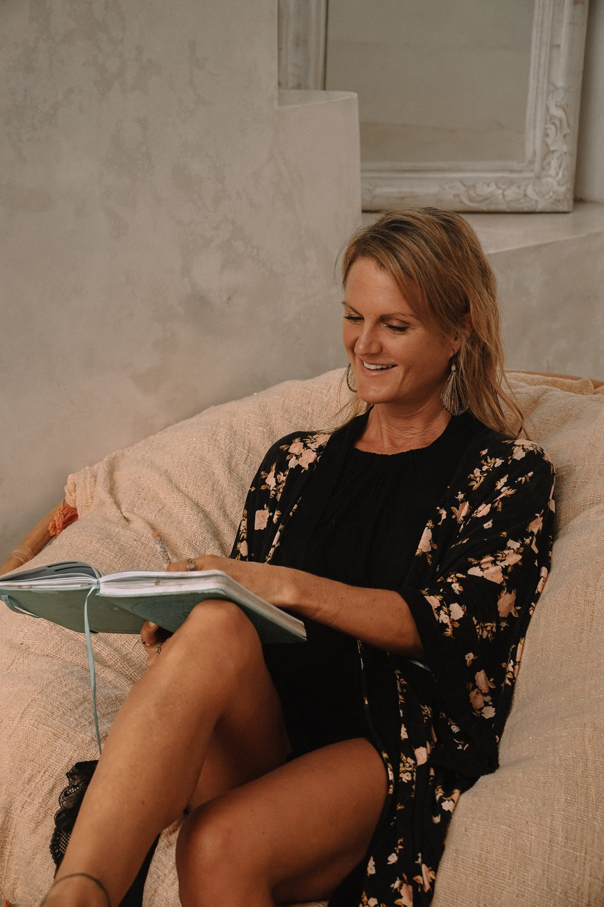

Content & Social Media Marketing
Strategy, editorial, channel management and campaigns that build audiences and move them to act — including influencer and community work.
Boutique marketing & communications · Cologne · Cyprus · Europe
Comuno Lab is a boutique agency for content, social media, communications and change — senior strategy paired with a small, dedicated team. German roots, European reach, delivered in English.
We help ambitious teams tell clearer stories, run sharper campaigns and guide change that actually lands — from fast-moving brands to enterprise transformation. Big-agency thinking, without the big-agency overhead.
years across marketing & communications
brands & organisations supported
industries, from FMCG to enterprise IT
languages — EN · DE · across Europe
What we do
Engage us for one, or as your fractional in-house team. Every engagement is led by senior hands and scaled with a trusted specialist team.
Strategy, editorial, channel management and campaigns that build audiences and move them to act — including influencer and community work.
Brand strategy, corporate and internal communications, and end-to-end campaign management across complex, multi-market organisations.
Organisational Change Management (OCM) for digital and SAP rollouts — leadership messaging, end-user enablement, intranet & newsletter programmes.
Step-in leadership as your Interim CMO, Marketing or Communications Lead — stabilising, restructuring and delivering while you hire.
Practical AI: chatbots, automated funnels and CRM workflows (n8n, Make, Salesforce) that make small teams move like big ones.
From founders and SMEs to enterprise marketing departments — we plug in with a small senior team and scale to the brief.
Tell us your challenge →
The lab behind the work
Comuno Lab is led by Suparni Neuwirth, a digital marketing and communications specialist with 20+ years across content, CRM, brand and change. She has built and steered campaigns for brands like Miele, Heinemann, Douglas, Vaillant and Lichtblick, and today focuses on the work that needs the most judgement: communications for complex transformation, and senior interim leadership.
Around her, Comuno Lab brings in a trusted circle of specialists — design, social, automation and copy — so clients get the seniority of a consultant with the delivery power of an agency. Fluent in German and English, working across Europe.
Selected experience
Communications specialist for organisational change management on one of Europe's largest SAP rollouts — coordinating leadership messaging, end-user communication, the SharePoint platform, newsletters and executive presentations.
Social media / digital programme manager for the Forest Stewardship Council, leading a small social team through a mission-driven, highly visible agenda.
Project manager for the SAP-services website relaunch — web architecture aligned to the customer journey, internal-linking & SEO strategy, and cross-unit stakeholder management.
CRM manager integrating shop and app touchpoints with Salesforce Marketing Cloud, lifting engagement KPIs by 18% through segmentation and automated campaigns.
International content manager across global webshops and subsidiaries, working in a cross-country matrix on SAP Commerce, landing pages and campaign localisation.
Designing AI-driven communication and marketing automation — intelligent chatbots and n8n/Make workflows for lead nurturing, events and funnels.
How we work
We start with your goals, audience and constraints — and tell you honestly what will move the needle.
A clear strategy and roadmap: channels, messaging, timeline and the right-sized team.
We execute — content, campaigns, comms and automation — with senior eyes on quality throughout.
KPIs, reporting and iteration, so the work keeps compounding after launch.
Let's talk
Tell us where you are and where you want to go. We'll reply with a clear, no-pressure view on how Comuno Lab can help.